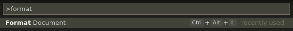
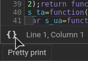

Parse-free code formatting
formatting use cases
CLI
$ prettier index.js
editor integration
browser devtools
file viewing
$ less styles.min.css
formatting steps
- Lexing
- Parsing
- Printing
fn (42 ,1337 ) ;
lexing
==>
fn
(
42
,
1337
)
;
fn
(
42
,
1337
)
;
parsing
==>
Program
body[0]:
ExpressionStatement
expression:
CallExpression
callee:
Identifier
name: 'fn'
arguments[0]:
NumericLiteral
value: 42
arguments[1]:
NumericLiteral
value: 1337
Program
body[0]:
ExpressionStatement
expression:
CallExpression
callee:
Identifier
name: 'fn'
arguments[0]:
NumericLiteral
value: 42
arguments[1]:
NumericLiteral
value: 1337
printing
==>fn(42, 1337);
printing
spacing
fn (42 ,1337 ) ;
==>
fn(42, 1337);
indentation
if(b) {
fn();
}
==>
if(b) {
fn();
}
hard line breaks
fn(1); fn(2);
==>
fn(1);
fn(2);
soft line breaks
let someVar = someFunc(someParam, someOtherParam);
==>
someVar =
someFunc(someParam, someOtherParam);
someVar = someFunc(
someParam, someOtherParam);
someVar = someFunc(someParam,
someOtherParam);
someVar = someFunc(
someParam,
someOtherParam,
);
skipping parsing
why parse at all?
let c = (a + b
if (a == b
int y = (int
) - x
;
;
;
consistency
a +
(b * c)
a + b * c
power
((1) + ((2) * ((3))))
flexibility
- output format
- configuration options
efficiency
parsing time ≫ lexing timestreaming
if(a==b){fn(1);fn(2);}
if (a == b) {
fn(1);
fn
adaptability
no coupling to language syntaxformatting use cases
CLI
$ prettier index.js
editor integration
browser devtools
file viewing
$ less styles.min.css
Lisp-like syntax
(let x '(+ 1 y))